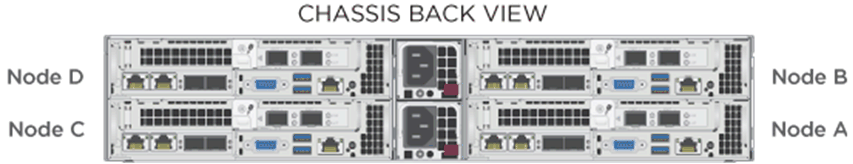
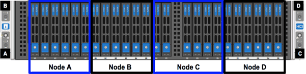

Hシリーズハードウェアをインストールする
NetApp HCIの使用を開始する前に、ストレージノードと計算ノードを正しくインストールする必要があります。
| 指示の視覚的表現については、ポスターを参照してください。 |
ワークフロー図
ここのワークフロー図は、インストール手順の概要を示しています。手順は、Hシリーズのモデルによって若干異なります。
H410CおよびH410S
H610CおよびH615C
| 「ノード」と「シャーシ」という用語は、H610CとH615Cの場合は同じ意味で使用されます。これは、ノードとシャーシが2Uの4ノードシャーシの場合とは異なり、別個のコンポーネントではないためです。 |
H610S
| 「ノード」と「シャーシ」という用語は、H610CとH615Cの場合は同じ意味で使用されます。これは、ノードとシャーシが2Uの4ノードシャーシの場合とは異なり、別個のコンポーネントではないためです。 |
インストールの準備
インストールの準備として、出荷されたハードウェアのインベントリを作成し、不足しているアイテムがある場合はネットアップサポートに連絡してください。
インストール場所に次のアイテムがあることを確認してください。
システムのラックスペース。
| ノードタイプ | ラックスペース |
|---|---|
H410CおよびH410Sノード |
2ラックユニット（2U） |
H610Cノード |
2U |
H615CおよびH610Sノード |
1ラックユニット（1U） |
SFP28 / SFP +直接接続ケーブルまたはトランシーバー
RJ45コネクタ付きのCAT5e以上のケーブル
システムを構成するためのキーボード、ビデオ、マウス（KVM）スイッチ
USBスティック（オプション）
| 出荷されるハードウェアは、注文内容によって異なります。新しい2U、4ノードの注文には、シャーシ、ベゼル、スライドレールキット、ストレージノード用のドライブ、ストレージノードとコンピューティングノード、および電源ケーブル（シャーシごとに2本）が含まれます。 H610Sストレージノードを注文すると、ドライブはシャーシに取り付けられます。 |
| ハードウェアを取り付けるときは、必ずすべての梱包材とラッピングをユニットから取り外してください。これにより、ノードが過熱してシャットダウンするのを防ぐことができます。 |
レールを取り付けます
出荷されたハードウェア注文には、スライドレールのセットが含まれています。レールの取り付けを完了するには、ドライバーが必要です。インストール手順は、ノードモデルごとにわずかに異なります。
| 機器が転倒しないように、ハードウェアをラックの下部から上部に取り付けます。ラックに安定装置が含まれている場合は、ハードウェアを取り付ける前にそれらを取り付けてください。 |
H410CおよびH410S
H410CおよびH410Sノードは、2Uの4ノードHシリーズシャーシにインストールされ、2セットのアダプタが付属しています。丸穴のあるラックにシャーシを設置する場合は、丸穴のあるラックに適したアダプタを使用してください。 H410CおよびH410Sノードのレールは、29インチから33.5インチの深さのラックに適合します。レールが完全に収縮すると、長さは28インチになり、レールの前部と後部は1本のネジだけで固定されます。
| シャーシを完全に収縮したレールに取り付けると、レールの前部と後部が分離する場合があります。 |
レールの前面をラックの前面支柱の穴に合わせます。
レールの前面にあるフックをラックのフロントポストの穴に押し込み、バネ仕掛けのペグがラックの穴にカチッとはまるまで押し下げます。
-
レールをネジでラックに取り付けます。これは、ラックの前面に取り付けられている左側のレールの図です。

レールの後部をラックの後部支柱まで伸ばします。
レールの後部のフックを後部支柱の適切な穴に合わせて、レールの前部と後部が同じレベルになるようにします。
レールの後部をラックに取り付け、レールをネジで固定します。
ラックの反対側で上記のすべての手順を実行します。
H610C
これは、H61OC計算ノードにレールを取り付けるための図です。
H610SおよびH615C
これは、H610SストレージノードまたはH615C計算ノードにレールを取り付けるための図です。

| H610SとH615Cには左右のレールがあります。 H610S / H615Cつまみネジでシャーシをレールに固定できるように、ネジ穴を下に向けて配置します。 |
ノード/シャーシをインストールします
H410C計算ノードとH410Sストレージノードを2Uの4ノードシャーシにインストールします。 H610C、H615C、およびH610Sの場合は、シャーシ/ノードをラックのレールに直接取り付けます。
| NetApp HCI 1.8以降、2つまたは3つのストレージノードでストレージクラスターをセットアップできます。 |
| ユニットからすべての梱包材と包装を取り除きます。これにより、ノードが過熱してシャットダウンするのを防ぎます。 |
H410CおよびH410Sノード
-
H410CおよびH410Sノードをシャーシに取り付けます。これは、4つのノードがインストールされたシャーシの背面図の例です。
 -
H410Sストレージノードのドライブをインストールします。

H610Cノード/シャーシ
H610Cの場合、2U、4ノードシャーシの場合とは異なり、ノードとシャーシは別個のコンポーネントではないため、「ノード」と「シャーシ」という用語は同じ意味で使用されます。
これは、ノード/シャーシをラックに取り付けるための図です。
H610SおよびH615Cノード/シャーシ
H615CとH610Sの場合、2U、4ノードシャーシの場合とは異なり、ノードとシャーシは別個のコンポーネントではないため、「ノード」と「シャーシ」という用語は同じ意味で使用されます。
これは、ノード/シャーシをラックに取り付けるための図です。

スイッチを取り付けます
NetAppHCIインストールでMellanoxSN2010、SN2100、およびSN2700スイッチを使用する場合は、ここに記載されている手順に従って、スイッチをインストールしてケーブル接続します。
ノードをケーブル接続します
既存のNetAppHCIインストールにノードを追加する場合は、追加するノードのケーブル接続とネットワーク構成が既存のインストールと同じであることを確認してください。
| シャーシの背面にある通気孔がケーブルやラベルで塞がれていないことを確認してください。これにより、過熱によるコンポーネントの早期故障が発生する可能性があります。 |
H410C計算ノードとH410Sストレージノード
H410Cノードのケーブル接続には、2本のケーブルを使用するか6本のケーブルを使用するかの2つのオプションがあります。
2本のケーブルの構成は次のとおりです。
 ポートDおよびEの場合、共有管理、仮想マシン、およびストレージ接続用に2本のSFP28 / SFP +ケーブルまたはトランシーバーを接続します。
ポートDおよびEの場合、共有管理、仮想マシン、およびストレージ接続用に2本のSFP28 / SFP +ケーブルまたはトランシーバーを接続します。
 （オプション、推奨）帯域外管理接続のためにIPMIポートにCAT5eケーブルを接続します。
（オプション、推奨）帯域外管理接続のためにIPMIポートにCAT5eケーブルを接続します。
6本のケーブルの構成は次のとおりです。
 ポートAおよびBの場合、管理接続のために、ポートAおよびBに2本のCAT5e以上のケーブルを接続します。
ポートAおよびBの場合、管理接続のために、ポートAおよびBに2本のCAT5e以上のケーブルを接続します。
 ポートCおよびFの場合、仮想マシン接続用に2本のSFP28 / SFP +ケーブルまたはトランシーバーを接続します。
ポートCおよびFの場合、仮想マシン接続用に2本のSFP28 / SFP +ケーブルまたはトランシーバーを接続します。
ポートDおよびEの場合、ストレージ接続用に2本のSFP28 / SFP +ケーブルまたはトランシーバーを接続します。
（オプション、推奨）帯域外管理接続のためにIPMIポートにCAT5eケーブルを接続します。
H410Sノードのケーブル接続は次のとおりです。
ポートAおよびBの場合、管理接続のために、ポートAおよびBに2本のCAT5e以上のケーブルを接続します。
ポートCおよびDの場合、ストレージ接続用に2本のSFP28 / SFP +ケーブルまたはトランシーバーを接続します。
（オプション、推奨）帯域外管理接続のためにIPMIポートにCAT5eケーブルを接続します。
ノードをケーブル接続した後、電源コードをシャーシごとに2つの電源ユニットに接続し、240VPDUまたは電源コンセントに接続します。
H610C計算ノード
H610Cノードのケーブル接続は次のとおりです。
| H610Cノードは、2ケーブル構成でのみ展開されます。すべてのVLANがポートCおよびDに存在することを確認します。 |
 ポートCおよびDの場合、2本のSFP28 / SFP +ケーブルを使用してノードを10 / 25GbEネットワークに接続します。
ポートCおよびDの場合、2本のSFP28 / SFP +ケーブルを使用してノードを10 / 25GbEネットワークに接続します。
（オプション、推奨）IPMIポートのRJ45コネクタを使用してノードを1GbEネットワークに接続します。
 両方の電源ケーブルをノードに接続し、電源ケーブルを200〜240Vの電源コンセントに接続します。
両方の電源ケーブルをノードに接続し、電源ケーブルを200〜240Vの電源コンセントに接続します。
H615C計算ノード
H615Cノードのケーブル接続は次のとおりです。
| H615Cノードは、2ケーブル構成でのみ展開されます。すべてのVLANがポートAおよびBに存在することを確認します。 |
ポートAおよびBの場合、2本のSFP28 / SFP +ケーブルを使用してノードを10 / 25GbEネットワークに接続します。
（オプション、推奨）IPMIポートのRJ45コネクタを使用してノードを1GbEネットワークに接続します。
両方の電源ケーブルをノードに接続し、電源ケーブルを110〜140Vの電源コンセントに接続します。
H610Sストレージノード
H610Sノードのケーブル接続は次のとおりです。
IPMIポートの2つのRJ45コネクタを使用して、ノードを1GbEネットワークに接続します。
を使用してノードを10 / 25GbEネットワークに接続します
2本のSFP28またはSFP +ケーブル。
を使用してノードを1GbEネットワークに接続します
IPMIポートのRJ45コネクタ。
両方の電源ケーブルをノードに接続します。
ノードの電源を入れます
ノードの起動には約6分かかります。
NetApp HCI2Uシャーシの電源ボタンを示す図を次に示します。
これは、H610Cノードの電源ボタンを示す図です。
これは、H615CおよびH610Sノードの電源ボタンを示す図です。
NetAppHCIを構成する
次のいずれかのオプションから選択します。
新しいNetAppHCIのインストール
-
1つのNetAppHCIストレージノードの管理ネットワーク（Bond1G）でIPv4アドレスを構成します。
管理ネットワークでDHCPを使用している場合は、DHCPで取得したストレージシステムのIPv4アドレスに接続できます。 キーボード、ビデオ、マウス（KVM）を1つのストレージノードの背面に接続します。
ユーザーインターフェイスでBond1GのIPアドレス、サブネットマスク、およびゲートウェイアドレスを構成します。 Bond1GネットワークのVLANIDを構成することもできます。
サポートされているWebブラウザー（Mozilla Firefox、Google Chrome、またはMicrosoft Edge）を使用して、手順1で構成したIPv4アドレスに接続してNetApp DeploymentEngineに移動します。
-
NetApp Deployment Engineユーザーインターフェイス（UI）を使用して、NetAppHCIを構成します。
他のすべてのNetAppHCIノードは自動的に検出されます。
既存のNetAppHCIインストールを展開します
Webブラウザーを開き、管理ノードのIPアドレスを参照します。
-
NetApp HCIストレージクラスター管理者の資格情報を入力して、NetApp Hybrid CloudControlにログインします。
ネットアップハイブリッドクラウドコントロールへのアクセスを参照してください。
-
ウィザードの手順に従って、ストレージノードや計算ノードをNetAppHCIインストールに追加します。
H410C計算ノードを追加するには、既存のインストールでNetApp HCI1.4以降を実行する必要があります。 H615C計算ノードを追加するには、既存のインストールでNetApp HCI1.7以降を実行する必要があります。
| 同じネットワーク上に新しくインストールされたNetAppHCIノードは自動的に検出されます。 |
構成後のタスクを実行する
使用しているノードのタイプによっては、ハードウェアをインストールしてNetApp HCIを構成した後、追加の手順を実行する必要がある場合があります。
H610Cノード
インストールした各H610CノードのESXiにGPUドライバーをインストールし、それらの機能を検証します。
H615CおよびH610Sノード
Webブラウザーを使用して、デフォルトのBMCIPアドレス
192.168.0.120移動します。ユーザー名
rootとパスワードcalvinを使用してログインします。ノード管理画面から、 [設定]> [ネットワーク設定]に移動し、帯域外管理ポートのネットワークパラメーターを構成します。
H615CノードにGPUが含まれている場合は、インストールしたH615CノードごとにESXiにGPUドライバーをインストールし、それらの機能を検証します。
詳細情報を探す
NetApp Configuration Advisor5.8.1以降のネットワーク検証ツール
 Edit on GitHub
Edit on GitHub